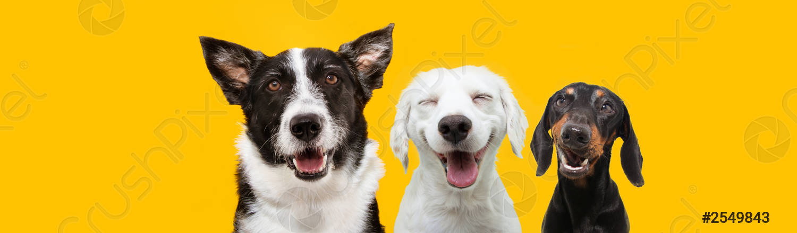

NÃO COMPRE, ADOTE!
O Brasil aparece em segundo lugar no ranking mundial de países com animais domesticados. E de acordo com a Associação Brasileira da Indústria de Produtos para Animais de Estimação (Abinpet), até 2012 a população de cães domesticados era de 37 milhões, enquanto os gatos de estimação eram aproximadamente 21 milhões.
A reflexão que fica é a quantidade de cães e gatos abandonados, sem nenhuma estimativa.
A escolha por um novo pet, acontece pela preferência por raça, cor e idade (geralmente filhotes). Muitos não consideram que, a adoção de animais ajuda a tirar vários animais de situações de risco, além de trazer alegria para o lar.
Por isso, criamos uma lista para ajudar a conscientizar sobre os benefícios ao adotar!